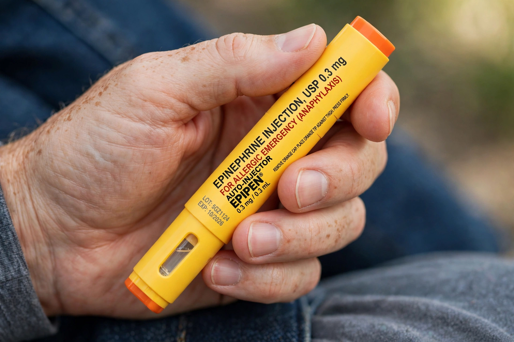

Autoinjector
An autoinjector (or auto-injector) is a medical device designed to deliver a pre-measured dose of a drug, usually by intramuscular or subcutaneous injection, at the press of a button or by pressure against the skin. Because it conceals the needle and automates the injection, it can be used by patients themselves or by untrained bystanders in emergencies.

| Uses | Anaphylaxis, multiple sclerosis, rheumatoid arthritis, migraine, antidotes |
|---|---|
| Common drugs | Epinephrine, sumatriptan, biologics, atropine/pralidoxime |
| Mechanism | Spring-loaded or gas-powered needle and plunger |
| Invented | 1970s (military nerve-agent antidotes); EpiPen commercialised by Merck KGaA/Mylan lineage |
Uses
The best-known autoinjector delivers epinephrine (adrenaline) for anaphylaxis, under brand names such as EpiPen. Military autoinjectors carry antidotes to nerve agents. Many modern biologic medicines — including the cholesterol drug alirocumab, treatments for rheumatoid arthritis and migraine antibodies — are supplied in pen-style autoinjectors for regular self-injection at home.
Design
A typical device contains a cartridge of medication, a hidden needle driven by a spring, and a mechanism that inserts the needle and expels the dose in one action. Safety features include needle shields, viewing windows to check the solution, and dose indicators. Two-step and needle-free (jet injector) variants exist.
History
Autoinjectors were developed during the Cold War for battlefield antidotes and adapted for civilian emergency medicine in the 1970s and 1980s. Their cost — notably the EpiPen price rises of the 2010s — has been a recurring public controversy.
See also
Alirocumab · EpiPen · Anaphylaxis · Jet injector